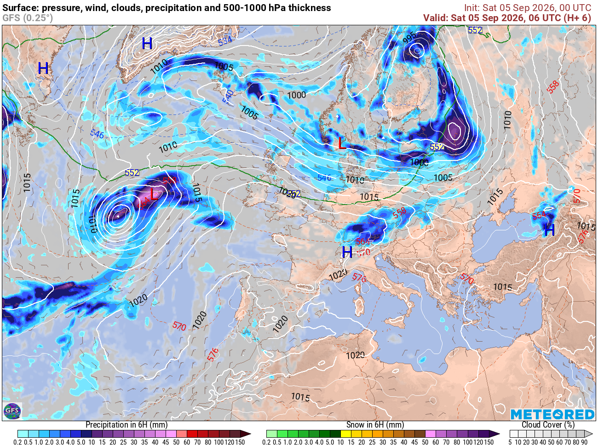

Puntos de control — Europa
Haz clic en la lista para seleccionar un punto, luego haz clic exacto sobre ese lugar en la imagen (usa la lupa para precisión). Si un punto no aparece en el mapa, pulsa "omitir".
−
100%
+
Copiar JSON